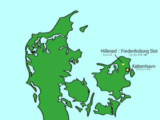

シェラン島北部には，一度訪れてみたいお城がたくさんありますが，その１つに，ヒレレズ（Hillerød）にあるフレズレクスボー城が挙げられます．ヒレレズは，コペンハーゲン中央駅から，S-tog（コペンハーゲン近郊電車）と呼ばれる電車で40分程のところにある，人口約3万人の町です．
このヒレレズの駅から西に向かって歩いて行くと，湖の対岸に佇むフレズレクスボー城の姿が見えます．天気の良い日には，湖に映るお城の姿を目にすることもできます．フレズレクスボー城は，元々1560年にフレズレク2世により，狩猟用のお城として建設されましたが，その後フレズレク2世の息子，クレスチャン4世の時代に建て替えられました．しかしながら，1895年にフレズレクスボー城は，火事により焼失してしまいます．その再建を金銭的に支援したのが，デンマークのビール会社・カールスベアの創業者，ヤコプ・クレスチャン・ヤコプスン（Jacob Christian Jacobsen）でした．
このフレズレクスボー城は，お城自体も非常に豪華ですが，お城に隣接する広大なバロック庭園もまた圧巻です．またお城の内部は美術館・博物館として一般公開されており，現在では，多くの美術品が所蔵され，展示されています．